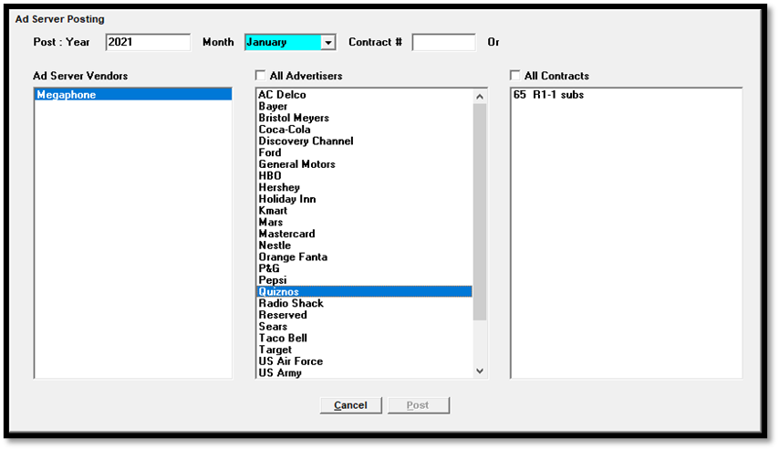
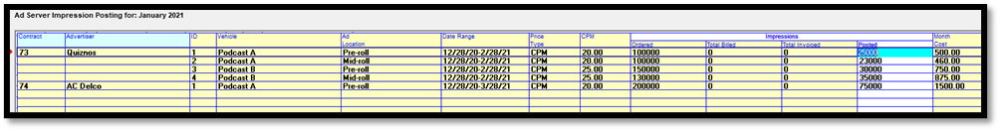
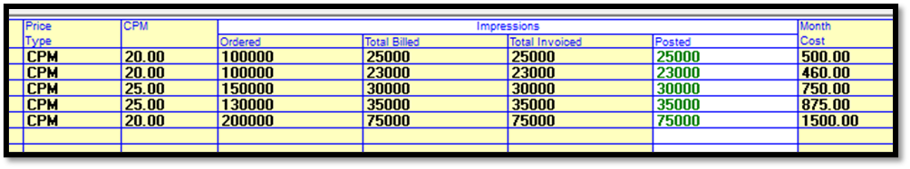

Ad Server Manual Posting Screen
On version 8.1 and above, when the Ad Server feature is enabled, the Ad Server Manual Posting screen is used to manually post Ad Server impressions, or to view posted impressions. This screen is accessed from the Post Log screen by pressing the Ad Server button in the lower right corner.
Selection Screen
When first pressing the Ad Server button, it brings up a selection screen used to pick the month, year, Ad Server, and advertiser and contracts that will be posted. The month and year will default to the current invoice period, using the broadcast calendar.

Post Year: enter the four digit year that will be posted or viewed.
Month: select the month that will be posted/viewed from the dropdown menu.
Contract #: you can type a contract number into the contract number field if you know the contract number you wish to post.
Ad Server Vendors: select the Ad Server to post data for. If there’s only one Ad Server, it will be pre-selected. If a single contract has vehicles using different Ad Servers, each Ad Server must be posted separately, and the system will automatically filter the lines to only show the relevant lines.
Advertisers: select one or more advertiser from the list of advertisers.
Contracts: after an advertiser is selected, the list of contracts will be populated with contracts that have Ad Server lines for the selected month and year. Select one or more contracts then press the Post button to access the posting screen (or type in a contract number in the Contract # field).
Posting Screen
The Posting screen (pictured below) lists the Digital lines for the selected Ad Server, for the posting month and year, for the contracts that were selected on the Selection screen. The yellow background for most of the fields indicates information that cannot be updated. The only value that can be changed on this screen is the Posted value, which is where the impressions for the month are entered.

The Posting Screen has the following fields:
Contract: displays the contract number. By default the results are sorted by contract number in ascending order. Click to sort the results in the opposite order.
Advertiser: the advertiser name. Click to sort the results in alphabetical order.
ID: the Ad Server line item ID number.
Vehicle: the vehicle name.
Ad Location: the ad location name.
Date Range: the line start and end date.
Price Type: CPM or Flat Rate.
CPM: for CPM lines, the CPM is shown.
Impressions Ordered: the Impression Goal from the contract line.
Impressions Total Billed: the cumulative total number of impressions billed, which can include over-delivery.
Impressions Total Invoiced: the cumulative total number of impressions invoiced, which is the number of billed impressions up to the Impression Goal amount (when impressions over the impression goal are not invoiced due to a Site Options setting).
Posted: this is the field where the impressions delivered for the month are entered. Press Save after entering the impression values in this field. When invoicing, the posted amount will be added to the Total Billed amount, and used to calculate the Total Invoiced amount. The amount of impressions invoiced for the month will be shown on the invoice.
Month Cost: for CPM lines, it uses the Posted Impressions and the CPM to calculate the monthly cost for the line. For Flat Rate lines, the monthly cost is the total line cost divided by the number of months.
After Invoicing
After final invoices have been run, if you view a previously posted month, it will no longer be available for posting, and the posted impressions for the month will be shown in green, as shown in the example below.

The posted amount for the month will be added to the Total Billed (which displays a cumulative total), and the Total Invoiced amount, up to the Impression Goal (for systems that do not invoice over delivery of impressions).